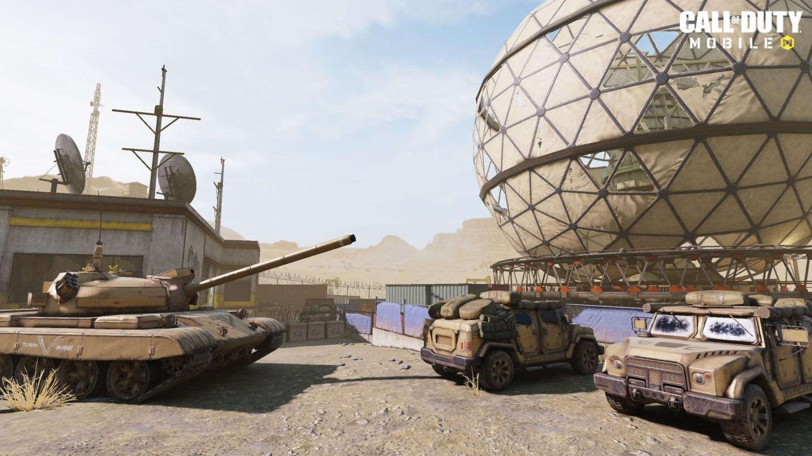

Mengenal Map Dome Call of Duty Mobile: Strategi Lengkap, Spot Dominasi, dan Tips Menang

Dalam Call of Duty Mobile, memahami karakteristik setiap map adalah kunci penting untuk mendominasi permainan. Salah satu map paling populer di mode cepat dan taktis adalah Map Dome. Map ini punya desain yang compact dan padat, dengan berbagai spot strategis dan jalur tersembunyi yang menguji kecepatan refleks dan koordinasi tim kamu.
Di artikel ini, kamu akan menemukan panduan lengkap mengenai Map Dome. Mulai dari latar belakang dan desain map, spot utama, jalur pergerakan, strategi untuk berbagai mode permainan, rekomendasi loadout senjata, hingga tips dan trik jitu agar kamu bisa memenangkan setiap pertandingan.
Sejarah dan Latar Belakang Map Dome
Map Dome pertama kali muncul di Call of Duty: Modern Warfare 3 dan langsung jadi favorit banyak pemain. Di Call of Duty Mobile, map ini hadir dengan penyesuaian khusus untuk gameplay mobile yang cepat dan kompetitif.
Dome mengambil setting di kompleks laboratorium teknologi tinggi dengan struktur menyerupai kubah besar. Pertempuran dalam map ini umumnya berlangsung di jarak dekat dan menengah. Area terbatasnya membuat intensitas pertempuran tinggi, di mana tiap sudut bisa jadi tempat serangan mendadak atau strategi penyergapan.
Struktur dan Layout Map Dome
Map Dome memiliki layout yang padat namun terstruktur, terdiri dari beberapa area penting:
- Central Dome: Area utama dan pusat pertempuran dengan banyak pilar dan mesin sebagai cover.
- Corridor dan Hallway: Lorong-lorong sempit yang menghubungkan berbagai ruangan, rawan untuk flanking.
- Lab Zone: Area laboratorium dengan banyak sekat, cocok untuk pertempuran jarak dekat.
- Roof Access: Jalur tangga menuju atap yang bisa digunakan sebagai vantage point oleh sniper.
- Side Entrances: Jalur pintu alternatif untuk rotasi dan flank musuh.
1. Central Dome
Ini adalah area dengan pertempuran paling sering terjadi. Banyak cover, namun juga terbuka dari berbagai sisi.
Strategi: Gunakan granat asap untuk menutupi pergerakan, dan pertimbangkan sniper dari atap untuk cover.
Risiko: Rentan diserang dari berbagai arah jika tidak punya kontrol penuh.
2. Corridor dan Hallway
Lorong-lorong ini menghubungkan Central Dome dengan Lab Zone dan Side Entrances. Sempit dan cocok untuk pertarungan cepat.
Strategi: Gunakan SMG atau shotgun, dan tempatkan Claymore sebagai jebakan.
Risiko: Serangan frontal dan jebakan bisa sangat mematikan di area ini.
3. Lab Zone
Ruangan dengan banyak peralatan laboratorium dan sekat, sangat cocok untuk pertempuran jarak dekat.
Strategi: Manfaatkan senjata dengan fire rate tinggi seperti SMG atau shotgun. Blind fire bisa mengejutkan musuh di balik cover.
Risiko: Area ini sangat rawan penyergapan.
4. Roof Access
Jalur menuju atap Dome menjadi posisi strategis untuk pemain sniper dan support.
Strategi: Kontrol tangga dan atap, pasang satu pemain sniper untuk memberikan informasi dan backup tembakan.
Risiko: Area akses cukup terbuka, rawan terkena flank jika tidak dijaga.
5. Side Entrances
Pintu-pintu kecil di sisi map bisa digunakan sebagai jalur flank atau rotasi cepat.
Strategi: Lakukan koordinasi dengan tim dan manfaatkan timing agar serangan lebih efektif.
Risiko: Jika flank gagal atau terdeteksi, kamu bisa langsung dijepit oleh musuh.
Rute Rotasi Terbaik di Map Dome
Penguasaan rotasi sangat penting di map yang padat seperti Dome. Berikut beberapa rotasi efektif yang bisa kamu manfaatkan:
- Lab Zone ke Central Dome: Gunakan smoke grenade untuk mengaburkan pandangan musuh.
- Corridor Timur: Jalur sempit namun efektif untuk mengecoh musuh yang fokus di tengah map.
- Stairwell Barat ke Rooftop: Posisi terbaik untuk memberikan informasi dan serangan jarak jauh.
- Side Entrance Selatan: Rotasi diam-diam yang bisa digunakan untuk mengejutkan lawan di Lab Zone.
Rekomendasi Senjata dan Loadout di Map Dome
Karena mayoritas pertempuran terjadi dalam jarak dekat hingga menengah, pemilihan loadout sangat menentukan. Berikut beberapa rekomendasi:
- Assault Rifle: KN-44, M4 (baik untuk berbagai kondisi jarak dan stabil).
- SMG: PDW-57, MSMC (unggul di ruangan sempit dan lorong).
- Shotgun: Striker, KRM-262 (mematikan untuk close combat di Lab Zone dan Hallway).
- Sniper Rifle: DL Q33, Arctic .50 (ideal untuk posisi rooftop dan overwatch).
- Granat & Equipment: Smoke Grenade, Flashbang, dan Claymore wajib dibawa untuk taktik defensif dan ofensif.
Mode Permainan yang Cocok di Map Dome
Map Dome sangat cocok untuk beberapa mode dengan tempo cepat dan membutuhkan kontrol area yang baik:
- Team Deathmatch: Pertempuran cepat dengan respawn yang intens dan konstan.
- Search and Destroy: Perlu taktik, pergerakan diam-diam, dan rotasi yang tepat.
- Domination: Tiga titik kontrol membuat mobilitas tim dan penempatan pemain sangat krusial.
Tips dan Trik Menang di Map Dome
- Selalu manfaatkan Smoke Grenade saat ingin masuk ke Central Dome atau saat rotasi.
- Gunakan komunikasi efektif antar tim, terutama saat menyebut lokasi musuh seperti tangga, lab, atau lorong.
- Gunakan flank melalui corridor secara diam-diam saat bermain mode Search and Destroy.
- Jangan abaikan posisi atap sebagai pengawas utama area tengah map.
- Pasang Claymore di lorong sempit untuk menghambat musuh yang melakukan push agresif.
- Gunakan SMG atau shotgun saat menyusup ke Lab Zone atau corridor untuk kill cepat.
Kesalahan Umum Pemain di Map Dome
- Terlalu agresif di area Central Dome tanpa dukungan tim.
- Melupakan jalur flank yang bisa dimanfaatkan musuh lewat corridor.
- Kurang komunikasi antar tim yang mengakibatkan blind spot tidak ter-cover.
- Tidak membawa smoke grenade, membuat rotasi terbaca dan mudah diserang.
- Mengabaikan akses rooftop sebagai posisi strategis untuk memberikan informasi dan cover tembakan.
Analisis Strategi Pro Player di Map Dome
Pemain profesional biasanya mengatur strategi berbasis rotasi cepat dan kontrol posisi kunci. Biasanya ada satu pemain sniper di rooftop, dua pemain bergerak agresif lewat corridor dan lab zone, serta satu pemain bertugas mengganggu posisi musuh dengan granat taktis seperti flash dan smoke.
Peran dalam tim sangat jelas dan terkoordinasi. Mereka juga memanfaatkan suara langkah musuh dan timing untuk rotasi agar tidak mudah terdeteksi. Map Dome benar-benar menguji kerja sama tim dalam skala sempit tapi intens.
Update Terbaru Map Dome di Call of Duty Mobile
Pada update terakhir Call of Duty Mobile, beberapa perubahan penting dilakukan untuk meningkatkan keseimbangan gameplay:
- Tambahan cover di rooftop untuk mencegah dominasi sniper yang terlalu kuat.
- Perbaikan visual di corridor untuk meningkatkan visibilitas pemain.
- Penyesuaian spawn point agar tidak mudah di-spawn trap oleh tim lawan.
Map Dome merupakan arena pertempuran yang seru dan intens dalam Call of Duty Mobile. Pertempuran jarak dekat dan menengah mendominasi gameplay, sehingga kamu perlu strategi, komunikasi tim yang solid, dan pemahaman mendalam terhadap layout map.
Dengan memahami spot penting, jalur rotasi, senjata terbaik, serta trik kecil seperti penggunaan granat asap dan taktik flank, kamu bisa memenangkan banyak pertandingan di map ini.
Kalau kamu ingin memperkuat loadout kamu dengan senjata dan item terbaik, jangan lupa untuk Top Up Call of Duty Mobile (CODM) murah di Topupgim. Proses cepat, aman, dan harga terjangkau untuk semua kebutuhan battle kamu.